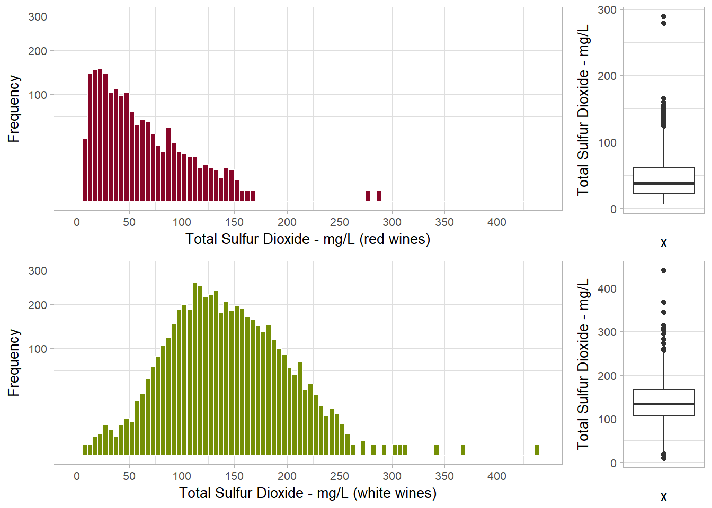
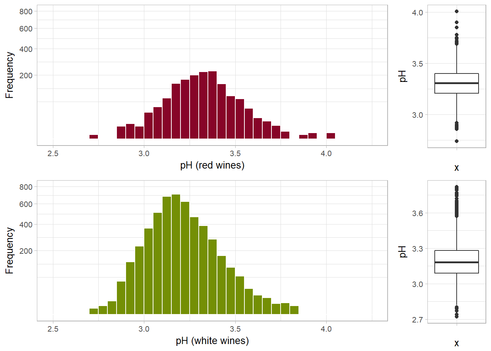
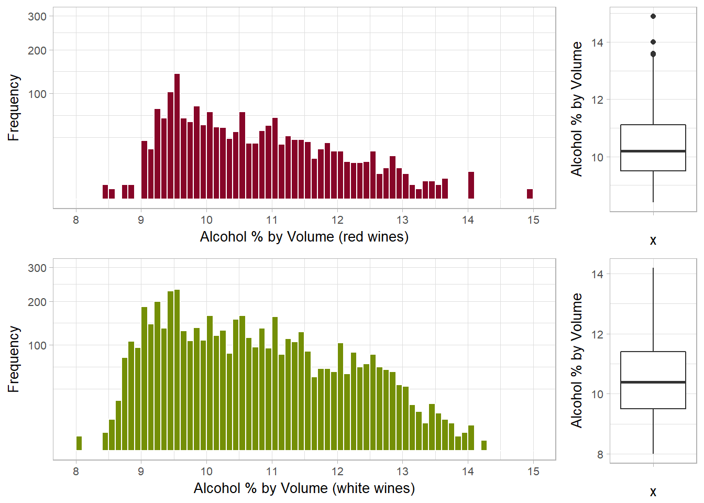
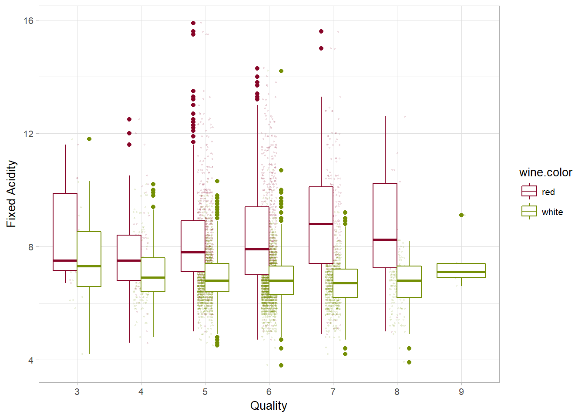
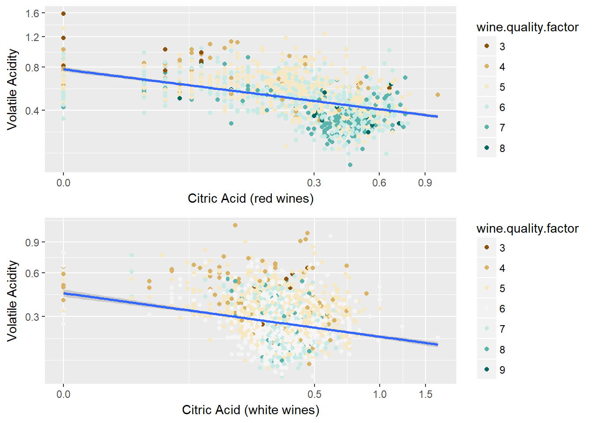
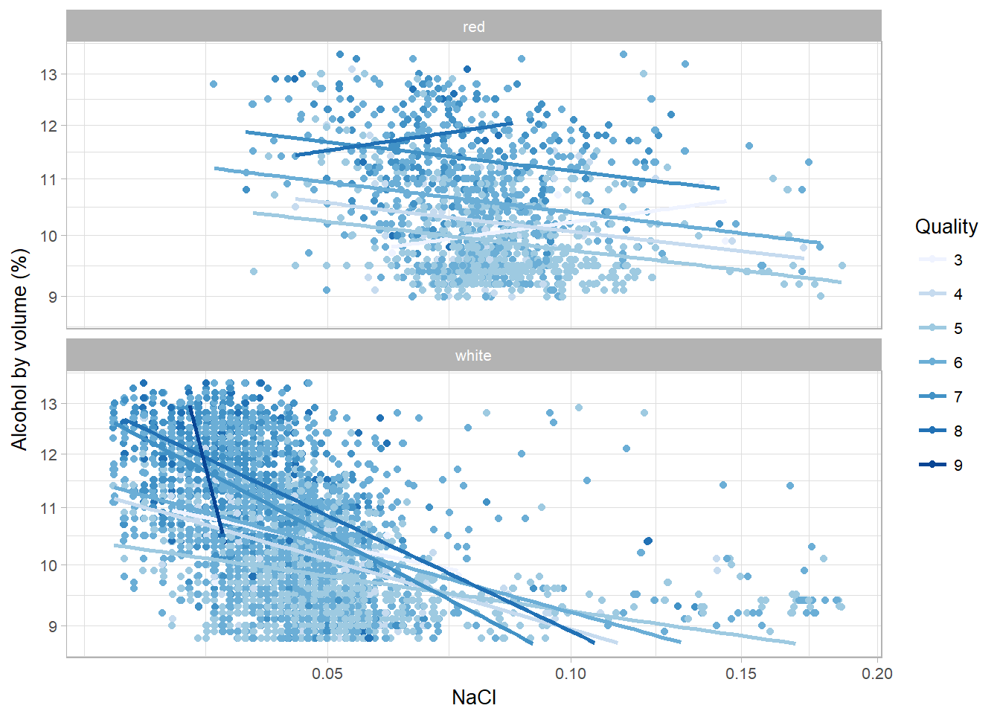
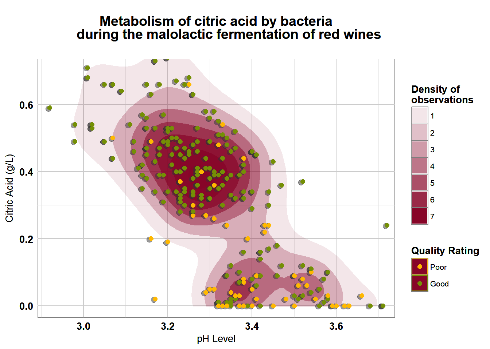

RED & WHITE WINE QUALITY
EXPLORATORY DATA ANALYSIS
by Pascal Thivierge
The Objective of this Analysis
According to Statistics Canada, even if Canadians still prefer beer, the market share of other types of alcoholic beverages, including wine, continues to grow. During the year ending March 31 2016, wine represented a market worth of 7 trillion dollars, or 4.1% more than the previous year.
A survey conducted in 2013 by the firm Laithwaite’s Wine, which was the subject of an article in The Telegraph in the same year, reveals that more than half of the 1000 respondents say that the descriptors used by wine professionals do not help to understand the taste of wine. Almost two-thirds of respondents considered that the descriptions on the counter-labels did not correspond to their own sensory analysis.
Although professional tasters have countless perceptions, the limited number of wine descriptors make the design of their appraisals rather abstract. Yet, despite the high rate of variability in the results of these assessments, they remain a key factor in the awarding of the price of a bottle.
Also playing an important role in the production of wine, laboratory physico- chemical tests take into account the acidity, pH, presence of sugar and other chemical properties. It could be beneficial for the wine industry in Canada to relate human assessments to the chemical properties of wines in order to better control the certification and quality.
About the dataset
The two datasets are related to red and white variants of the Portuguese “Vinho Verde” wine. For more details, consult the www.vinhoverde.pt website or the reference [Cortez et al., 2009]. Due to privacy and logistic issues, only physicochemical (inputs) and sensory (the output) variables are available (e.g. there is no data about grape types, wine brand, wine selling price, etc.).
The Analysis
1. Load the Data
In order to analyze both types of wine at the same time, it is necessary to pair the two sets of data and add the “color” categorical variable before doing so.
2. Summary of the Dataset
Display first observations :
## X fixed.acidity volatile.acidity citric.acid residual.sugar chlorides
## 1 1 7.4 0.70 0.00 1.9 0.076
## 2 2 7.8 0.88 0.00 2.6 0.098
## 3 3 7.8 0.76 0.04 2.3 0.092
## 4 4 11.2 0.28 0.56 1.9 0.075
## 5 5 7.4 0.70 0.00 1.9 0.076
## 6 6 7.4 0.66 0.00 1.8 0.075
## free.sulfur.dioxide total.sulfur.dioxide density pH sulphates alcohol
## 1 11 34 0.9978 3.51 0.56 9.4
## 2 25 67 0.9968 3.20 0.68 9.8
## 3 15 54 0.9970 3.26 0.65 9.8
## 4 17 60 0.9980 3.16 0.58 9.8
## 5 11 34 0.9978 3.51 0.56 9.4
## 6 13 40 0.9978 3.51 0.56 9.4
## quality color
## 1 5 red
## 2 5 red
## 3 5 red
## 4 6 red
## 5 5 red
## 6 5 redDisplay last observations :
## X fixed.acidity volatile.acidity citric.acid residual.sugar
## 6492 4893 6.5 0.23 0.38 1.3
## 6493 4894 6.2 0.21 0.29 1.6
## 6494 4895 6.6 0.32 0.36 8.0
## 6495 4896 6.5 0.24 0.19 1.2
## 6496 4897 5.5 0.29 0.30 1.1
## 6497 4898 6.0 0.21 0.38 0.8
## chlorides free.sulfur.dioxide total.sulfur.dioxide density pH
## 6492 0.032 29 112 0.99298 3.29
## 6493 0.039 24 92 0.99114 3.27
## 6494 0.047 57 168 0.99490 3.15
## 6495 0.041 30 111 0.99254 2.99
## 6496 0.022 20 110 0.98869 3.34
## 6497 0.020 22 98 0.98941 3.26
## sulphates alcohol quality color
## 6492 0.54 9.7 5 white
## 6493 0.50 11.2 6 white
## 6494 0.46 9.6 5 white
## 6495 0.46 9.4 6 white
## 6496 0.38 12.8 7 white
## 6497 0.32 11.8 6 whiteDimensions for red wine observations :
## [1] 1599 14Dimensions for white wine observations :
## [1] 4898 14In order to make the names of the variables a bit more tidy, I will rename them in order to better group them and be able to complement them easily.
Original variable names :
## [1] "X" "fixed.acidity" "volatile.acidity"
## [4] "citric.acid" "residual.sugar" "chlorides"
## [7] "free.sulfur.dioxide" "total.sulfur.dioxide" "density"
## [10] "pH" "sulphates" "alcohol"
## [13] "quality" "color"New variable names :
## [1] "id" "acid.fixed" "acid.volatile" "acid.citric"
## [5] "RS" "NaCl" "SO2.free" "SO2.total"
## [9] "density" "pH" "K2SO4" "ABV"
## [13] "wine.quality" "wine.color"The different attributes and their units of measure are listed in the text file provided with the dataset.
Several variables referring to a volume were expressed in g/dm3, in mg/dm3 or in g/cm3, which is equivalent to g/L, mg/L, and g/mL, respectively. Due to their use in a more common way, I will be using these last units in my exploratory analysis.
| Variable | Description | Unit |
|---|---|---|
| acid.fixed | Fixed acidity expressed as tartaric acid | g/L |
| acid.volatile | Volatile acidity expressed as acetic acid | g/L |
| acid.citric | Citric acid | g/L |
| RS | Residual sugar | g/L |
| NaCl | Sodium chlorides | g/L |
| SO2.free | Free sulfur dioxide | mg/L |
| SO2.total | Total sulfur dioxide | mg/L |
| density | Volumetric density | g/mL) |
| pH | Potential of hydrogen | pH index |
| K2SO4 | Potassium sulfates | g/L |
| ABV | Alcohol content | % by volume |
| wine.quality* | Based on sensory data | Score between 0 and 10 |
*Output variable
The summary statistics table below allows for better overview of the variables for each type of wine.
| vars | n | mean | sd | min | max | range | se | IQR | |
|---|---|---|---|---|---|---|---|---|---|
| acid.fixed | 1 | 1599 | 8.3196373 | 1.7410963 | 4.60000 | 15.90000 | 11.30000 | 0.0435410 | 2.100000 |
| acid.volatile | 2 | 1599 | 0.5278205 | 0.1790597 | 0.12000 | 1.58000 | 1.46000 | 0.0044779 | 0.250000 |
| acid.citric | 3 | 1599 | 0.2709756 | 0.1948011 | 0.00000 | 1.00000 | 1.00000 | 0.0048716 | 0.330000 |
| RS | 4 | 1599 | 2.5388055 | 1.4099281 | 0.90000 | 15.50000 | 14.60000 | 0.0352592 | 0.700000 |
| NaCl | 5 | 1599 | 0.0874665 | 0.0470653 | 0.01200 | 0.61100 | 0.59900 | 0.0011770 | 0.020000 |
| SO2.free | 6 | 1599 | 15.8749218 | 10.4601570 | 1.00000 | 72.00000 | 71.00000 | 0.2615857 | 14.000000 |
| SO2.total | 7 | 1599 | 46.4677924 | 32.8953245 | 6.00000 | 289.00000 | 283.00000 | 0.8226402 | 40.000000 |
| density | 8 | 1599 | 0.9967467 | 0.0018873 | 0.99007 | 1.00369 | 0.01362 | 0.0000472 | 0.002235 |
| pH | 9 | 1599 | 3.3111132 | 0.1543865 | 2.74000 | 4.01000 | 1.27000 | 0.0038609 | 0.190000 |
| K2SO4 | 10 | 1599 | 0.6581488 | 0.1695070 | 0.33000 | 2.00000 | 1.67000 | 0.0042390 | 0.180000 |
| ABV | 11 | 1599 | 10.4229831 | 1.0656676 | 8.40000 | 14.90000 | 6.50000 | 0.0266500 | 1.600000 |
| vars | n | mean | sd | min | max | range | se | IQR | |
|---|---|---|---|---|---|---|---|---|---|
| acid.fixed | 1 | 4898 | 6.8547877 | 0.8438682 | 3.80000 | 14.20000 | 10.40000 | 0.0120577 | 1.0000000 |
| acid.volatile | 2 | 4898 | 0.2782411 | 0.1007945 | 0.08000 | 1.10000 | 1.02000 | 0.0014402 | 0.1100000 |
| acid.citric | 3 | 4898 | 0.3341915 | 0.1210198 | 0.00000 | 1.66000 | 1.66000 | 0.0017292 | 0.1200000 |
| RS | 4 | 4898 | 6.3914149 | 5.0720578 | 0.60000 | 65.80000 | 65.20000 | 0.0724728 | 8.2000000 |
| NaCl | 5 | 4898 | 0.0457724 | 0.0218480 | 0.00900 | 0.34600 | 0.33700 | 0.0003122 | 0.0140000 |
| SO2.free | 6 | 4898 | 35.3080849 | 17.0071373 | 2.00000 | 289.00000 | 287.00000 | 0.2430087 | 23.0000000 |
| SO2.total | 7 | 4898 | 138.3606574 | 42.4980646 | 9.00000 | 440.00000 | 431.00000 | 0.6072391 | 59.0000000 |
| density | 8 | 4898 | 0.9940274 | 0.0029909 | 0.98711 | 1.03898 | 0.05187 | 0.0000427 | 0.0043775 |
| pH | 9 | 4898 | 3.1882666 | 0.1510006 | 2.72000 | 3.82000 | 1.10000 | 0.0021576 | 0.1900000 |
| K2SO4 | 10 | 4898 | 0.4898469 | 0.1141258 | 0.22000 | 1.08000 | 0.86000 | 0.0016307 | 0.1400000 |
| ABV | 11 | 4898 | 10.5142670 | 1.2306206 | 8.00000 | 14.20000 | 6.20000 | 0.0175839 | 1.9000000 |
The large difference between the range values and IQR indicates there is outliers in nearly every variables, for both red and white wines.
## 'data.frame': 6497 obs. of 14 variables:
## $ id : int 1 2 3 4 5 6 7 8 9 10 ...
## $ acid.fixed : num 7.4 7.8 7.8 11.2 7.4 7.4 7.9 7.3 7.8 7.5 ...
## $ acid.volatile: num 0.7 0.88 0.76 0.28 0.7 0.66 0.6 0.65 0.58 0.5 ...
## $ acid.citric : num 0 0 0.04 0.56 0 0 0.06 0 0.02 0.36 ...
## $ RS : num 1.9 2.6 2.3 1.9 1.9 1.8 1.6 1.2 2 6.1 ...
## $ NaCl : num 0.076 0.098 0.092 0.075 0.076 0.075 0.069 0.065 0.073 0.071 ...
## $ SO2.free : num 11 25 15 17 11 13 15 15 9 17 ...
## $ SO2.total : num 34 67 54 60 34 40 59 21 18 102 ...
## $ density : num 0.998 0.997 0.997 0.998 0.998 ...
## $ pH : num 3.51 3.2 3.26 3.16 3.51 3.51 3.3 3.39 3.36 3.35 ...
## $ K2SO4 : num 0.56 0.68 0.65 0.58 0.56 0.56 0.46 0.47 0.57 0.8 ...
## $ ABV : num 9.4 9.8 9.8 9.8 9.4 9.4 9.4 10 9.5 10.5 ...
## $ wine.quality : int 5 5 5 6 5 5 5 7 7 5 ...
## $ wine.color : chr "red" "red" "red" "red" ...As the variable “wine.quality” is a score variable, I will factor it into a new variable : wine.quality.factor.
## [1] "3" "4" "5" "6" "7" "8" "9"3. Understanding the Distribution of Variables
In order to better understand the different attributes of the wines analyzed, I will support the reported facts with explanations from scientific publications or other recognized publications in the field of wines.
Quality
This variable is the main feature of the dataset. We will use it to determine the effects of supporting variables over the quality of wine.
It is based on sensory data and it is the median of at least 3 evaluations made by wine experts, which graded the wine quality between 0 (very bad) and 10 (very excellent).
The British Colombia Amateur Winemakers Association has put to our disposition a Wine Score Sheet which will help to better understand the importance given by wine professionals to the different evaluation criteria and how the underlying relationships influence their decisions.
Summary of wine.quality variable (red wines) :
## Min. 1st Qu. Median Mean 3rd Qu. Max.
## 3.000 5.000 6.000 5.636 6.000 8.000Count of each grade in wine.quality variable (red wines) :
## wine.quality
## 3 4 5 6 7 8
## 10 53 681 638 199 18Summary of wine.quality variable (white wines) :
## Min. 1st Qu. Median Mean 3rd Qu. Max.
## 3.000 5.000 6.000 5.878 6.000 9.000Count of each grade in wine.quality variable (white wines) :
## wine.quality
## 3 4 5 6 7 8 9
## 20 163 1457 2198 880 175 5Plots :
Although the two datasets are very different in size, it is still possible to see some similarities in the distribution of observations on the quality scale, for example, a higher concentration of wines judged to be average than wines judged to be excellent or of poor quality.
Density plot :
Compared proportionately, the density of the quality attributed to the observations is similar for the two datasets. Specifically, the density of results for ratings 3 and 4 is roughly the same, a high concentration for ratings 5 and 6, a moderately high density for rating 7, and a low representation in ratings 8 and 9.
It is noted, however, that the rating 5 obtains a higher density for red wines. For their part, the white wines stand out greatly for ratings 6, 7, 8 and 9, the latter being simply non-existent for red wines.
In view of these differences, it would be appropriate to create three quality categories in order to obtain less granularity in some plots. Grade 3 and 4 will be considered “poor”, 5 and 6, “Average”, while grade 7 and higher, “Good”.
## [1] "Poor" "Average" "Good"Plots :
The graphs above show that there are still more good wines than poor, whether it be red wines or white wines.
Acids
Fixed Acidity
Found in significant concentrations in grape vines, tartaric acid plays a prominent role in winemaking, as it maintains the chemical stability of the wine, by lowering the pH of fermenting “must” to a level where many undesirable spoilage bacteria cannot live, and acting as a preservative after fermentation. It also preserve color and influences the taste of the finished product.
Summary of acid.fixed variable (red wines) :
## Min. 1st Qu. Median Mean 3rd Qu. Max.
## 4.60 7.10 7.90 8.32 9.20 15.90Summary of acid.fixed variable (white wines) :
## Min. 1st Qu. Median Mean 3rd Qu. Max.
## 3.800 6.300 6.800 6.855 7.300 14.200Plots :
The fixed acidity distribution for red wine has a positive skew with many outliers at the tail, while the one of white wine is more symmetric, still with a positive skew and many outliers at both head and tail.
Data transformation is needed to rectify the normality of both distributions. Since many variables use metric units to measure volume, the cube root should be best suited.
cuberoot_trans = function() trans_new('cuberoot',
transform = function(x) x^(1/3),
inverse = function(x) x^3)Transformation :
The cube root transformation gives an almost normal result.
Volatile Acidity
The most volatile of the primary acids associated with wine, acetic acid is a two-carbon organic acid produced in wine during or after the fermentation period and is responsible for the sour taste of vinegar. It can be contributed by many wine spoilage yeasts and bacteria.
Summary of acid.volatile variable (red wines) :
## Min. 1st Qu. Median Mean 3rd Qu. Max.
## 0.1200 0.3900 0.5200 0.5278 0.6400 1.5800Summary of acid.volatile variable (white wines) :
## Min. 1st Qu. Median Mean 3rd Qu. Max.
## 0.0800 0.2100 0.2600 0.2782 0.3200 1.1000Plots :
The volatile acidity distribution for red wine is positively skewed, with some outliers at the tail. The same is true for white wines, but with more outliers at the tail.
The composition of red wines is quite different from that of the white wines and this translates into the plots above by the big difference between the median concentration of volatile acids of each type of wine.
Transformation :
The cube root transformation gives an almost normal result.
VA Sensory Thresholds
According to Lambrechts and Pretorius (2000), the sensory threshold for volatile acid could be as low as 0.4 g/L and a small amount of VA under this threshold is believed to add complexity to a wine, while it is usually regarded as detrimental at concentration over 0.7 g/L.
Using these levels to create a categorical variable could be helpful with some plots later, with concentration under 0.4 g/L to be considered “desirable”, between 0.4 g/L and 0.7 g/L, “Detectable”, and over 0.7 g/L, “unpleasant”.
## [1] "Unpleasant" "Detectable" "Desirable"Plots :
There is a significant difference in the distribution of volatile acidity detection range relatively to the quality of red wines. Notice how the “good” wine quality bucket distribution of VA sensory detection range shows a greater proportion of “desirable”, while combined proportions of observations that fall under “detectable” or “unpleasant” range represent a major part for both “poor” and “average” wine quality.
This variable seems to have a little to no impact for white wines, with the same pattern for the three quality buckets.
Citric Acid
Found only in very minute quantities in wine grapes, citric acid often has a concentration about 1/20 that of tartaric acid. It can be used as supplement to boost the wine’s total acidity, but less frequently, due to its microbial instability and the aggressive flavors it can add to the wine.
Summary of acid.citric variable (red wines) :
## Min. 1st Qu. Median Mean 3rd Qu. Max.
## 0.000 0.090 0.260 0.271 0.420 1.000Summary of acid.citric variable (white wines) :
## Min. 1st Qu. Median Mean 3rd Qu. Max.
## 0.0000 0.2700 0.3200 0.3342 0.3900 1.6600Plots :
The citric acid distribution for red wine has a great variance, while the one of white wine is normal with a slight positive skew.
The peaks in both plots capted my attention, as they occur precisely at intervals of 0.25 g/L. The use of citric acid supplements could potentially be the reason behind.
Naturally, grapes citric acidity ranges from 0.1 to 0.7, but in both distributions many wines have no citric acid at all, particularly in that of red wines.
Transformation :
The result of the cube root transformation reveals a bimodal distribution for red wines. The creation of a categorical variable based on these two modes will be useful in multivariate exploration.
## [1] "Low" "High"Acid Taste Index
The article An Acidity Index for the Taste of Wines, published in volume 31 issue 3 of the American Journal of Enology and Viticulture (1980), establishes that, in the acid region of wine, acid taste is primarily dependent on total acidity, secondarily on pH, and at most indirectly on total buffer concentration.
The authors defined an acidity index whose values can be obtained with the following calculation :
Before using this formula, a measurement of “total acidity” (TA), which includes fixed and volatile acids, is needed.
# Create a new variable for total acidity
WQ$acid.total <- WQ$acid.fixed + WQ$acid.volatileWQ$acid.index <- WQ$acid.total - WQ$pHSummary of acid.index variable (red wines) :
## Min. 1st Qu. Median Mean 3rd Qu. Max.
## 1.220 4.282 5.190 5.536 6.492 13.335Summary of acid.index variable (white wines) :
## Min. 1st Qu. Median Mean 3rd Qu. Max.
## 0.360 3.350 3.890 3.945 4.490 11.320Plots :

Transformation :
The cube root transformation gives an almost normal result.
Residual Sugar
During the process of fermentation, sugars from wine grapes are broken down and converted by yeast into alcohol (ethanol) and carbon dioxide. But, not all sugars are fermentable : some sugars like the five-carbon arabinose, rhamnose and xylose are still present in the wine after fermentation.
As a very high sugar content kills the yeast once a certain alcohol content is reached, no wine is ever fermented completely without any residual sugar.
Summary of RS variable (red wines) :
## Min. 1st Qu. Median Mean 3rd Qu. Max.
## 0.900 1.900 2.200 2.539 2.600 15.500Summary of RS variable (white wines) :
## Min. 1st Qu. Median Mean 3rd Qu. Max.
## 0.600 1.700 5.200 6.391 9.900 65.800Plots :
Looking at the plot above, it is clear that none of the wine samples have no residual sugar. The red wines distribution start at 0.9 g/L, while the white wines start at 0.6 g/L.
The residual sugar distribution for both wine colors is positively skewed, but whites have a lot more variance.
Transformation :
The result of the transformation clearly reveals a multimodal distribution for white wines. It seems there are two major modes, but there seems to be two minor modes within the larger one.
Charting sweetness
According to European Union commission regulation No. 607/2009, the terms “dry”, “medium dry”, “medium” and “sweet” may be used on the labels of table wines and quality wines to describe their sweetness.
Dry : sugar content does not exceed 4 grams per litre, or 9 grams per litre, provided that the total acidity expressed as grams of tartaric acid per litre is not more than 2 grams below the residual sugar content.
Medium dry : sugar content exceeds the maximum set at above but not exceeds 12 grams per litre, or 18 grams per litre, provided that the total acidity expressed as grams of tartaric acid per litre is not more than 10 grams below the residual sugar content.
Medium : sugar content is higher than the maximum set at above but not more than 45 grams per litre.
Sweet : sugar content is of at least 45 grams per litre.
The above ranges allows to obtain a well-defined categorique variable.
## [1] "Dry" "Medium Dry" "Medium" "Sweet"Plots :
Notice that since there is a single observation of sweet wine, with a sugar content of 65,8 g/L, I did not show the “sweet” wine type.
Although the previous categories represent the current regulations, it would be more appropriate to keep only the two main modes, namely “dry” and “sweet”.
## [1] "Dry" "Sweet"Sodium Chloride
A recent study states that terroir and grape variety influence the concentration of chlorides in the wine. Wine with higher levels is most likely to come from a country where irrigation is carried out using salty water or in areas with brackish terrains. Additionally, some grape varieties, like Syrah, are most likely to absorb those chlorides.
The most successful wine grape varieties in Vinho Verde region are Alvarinho and Loureiro for white ones and Vinhão, followed by Azal Tinto and Espadeiro for the red ones.
Summary of NaCl variable (red wines) :
## Min. 1st Qu. Median Mean 3rd Qu. Max.
## 0.01200 0.07000 0.07900 0.08747 0.09000 0.61100Summary of NaCl variable (white wines) :
## Min. 1st Qu. Median Mean 3rd Qu. Max.
## 0.00900 0.03600 0.04300 0.04577 0.05000 0.34600Plots :
For both wine colors, the distribution is positively skewed. However, the median chloride concentration for red wine is 0.079 g/L, while the white wine is a little lower, at 0.43 g/L.
An article published in volume 65 issue 1 of the American Journal of Enology and Viticulture (2013) reports that a significant proportion of wine consumers may detect salt in wines, even at low concentrations.
Since the dataset does not provide the age of the panelists, I cannot use the results of this study to determine the threshold of detection of each wine.
Transformation :
The cube root transformation gives an almost normal result.
Sulfur Dioxide
There are two primary sources of sulfur dioxide, or SO2, in wine. One source is from yeast, the other is from additions made by winemakers, such as potassium metabisulfite, wich dissociate in water to potassium ions(K+) and singly inonised bisulfite (HSO3)-.
Total Sulfur Dioxide (free and bound)
The total SO2 is the sum of free and bound SO2, as shown in the figure below.
Illustration by Ben Rotter
Summary of SO2.total variable (red wines) :
## Min. 1st Qu. Median Mean 3rd Qu. Max.
## 6.00 22.00 38.00 46.47 62.00 289.00Summary of SO2.total variable (white wines) :
## Min. 1st Qu. Median Mean 3rd Qu. Max.
## 9.0 108.0 134.0 138.4 167.0 440.0Plots :

The difference between the two plots above makes a lot of sens when taking in account the distinct winemaking processes of red and white wine.
Indeed, the positively skewed distribution of red wines shows low total SO2 median value of 38 mg/L. Even if conventional winemakers add some sulfur dioxide, red wines do not need any because they naturally contain anti-oxidants, acquired from their skins and stems during fermentation.
Because grapes flesh is not left in contact with their skins after crushing, white wines are more prone to oxidation and tend to be given larger doses of sulfur dioxide. The distribution of white wines is also positively skewed, but it shows, in addition to its greater variance, a much higher median value, with 134 mg/L.
Transformation :
The cube root transformation gives an almost normal result.
Free Sulfur Dioxide
As illustrated in the figure below, depending on the pH of the wine, the free sulfur dioxide may exist in three chemical forms : the molecular SO2 (as a dissolved gas), bisulfite ion HSO3- and sulfite ion SO3–.
Illustration by Ben Rotter
In its sulfite form, SO2 is typically odourless and tasteless.
At wine pHs, bisulfite ion is the predominant form of free SO2, providing an insignificant antiseptic affect on yeasts, while the quantity of SO2 in the sulphite form is minute and reacts very slowly with oxygen. It is odourless, but has a salty and bitter taste.
Existing as either a gas or as single molecule, the molecular form is the most important form of SO2 in wine and primarily serves as an antibiotic and antioxidant. It may be perceived as a pungent odor at high concentrations.
Summary of SO2.free variable (red wines) :
## Min. 1st Qu. Median Mean 3rd Qu. Max.
## 1.00 7.00 14.00 15.87 21.00 72.00Summary of SO2.free variable (white wines) :
## Min. 1st Qu. Median Mean 3rd Qu. Max.
## 2.00 23.00 34.00 35.31 46.00 289.00Plots :
There are many outliers at tail of both distributions, and I removed an extreme outlier in white wine to better compare both distributions.
The positively skewed distribution of red wines shows low free SO2 median value of 14 mg/L, while that of white wine, also positively skewed, shows median value of 34 mg/L.
Transformation :
The result of the transformation reveals a multimodal distribution for red wines, while an almost normal one for whites.
Molecular Sulfur Dioxide
The dataset provides us with the free and total sulfur dioxide measurements, as well as the pH of the wine, which is necessary to calculate the active part of free sulfur dioxide.
The molecular SO2 level can be extrapolated by using this formula :
In the calculation above, a pK value of 1.81 is adopted. According to Ben Rotter’s article on sulfur dioxide, this is a widely used value, and will be used to create the SO2.molecular variable :
# Create a new variable for molecular SO2
WQ$SO2.molecular <- WQ$SO2.free / (WQ$density + (10^(WQ$pH - 1.81)))Summary of SO2.molecular variable (red wines) :
## Min. 1st Qu. Median Mean 3rd Qu. Max.
## 0.0245 0.2346 0.3932 0.5053 0.6668 3.3645Summary of SO2.molecular variable (white wines) :
## Min. 1st Qu. Median Mean 3rd Qu. Max.
## 0.09351 0.85233 1.31347 1.49035 1.95321 9.32567Plots :
As for total and free SO2, the molecular SO2 distribution is positively skewed, for both red and white wines, with many outliers at the tail.
The median value for red wines is 0.39 mg/L, while white wine show a much higher value, with 1.31 mg/L.
Transformation :
The cube root transformation gives an almost normal result.
Bacterial Protection
As a rule-of-thumb, control of biological stability is generally obtained with molecular SO2 levels ranging from 0.5 mg/L to 1.5 mg/L, with 0.5 mg/L providing sufficient protection for red wines and 0.8 mg/L required for white wines.
Une variable catégorique utilisant les ranges ci-dessus pourrait s’avérer être très utile pour comparer les niveaux de protection du vin.
For red wines : a “very low” level under 0.25 mg/L, “low” between 0.25 mg/L and 0.5 mg/l, “correct” between 0.5 mg/L and 2 mg/L, and finally, “high” for values above 2 mg/L.
For white wines : a “very low” level under 0.4 mg/L, “low” between 0.4 mg/L and 0.8 mg/l, “correct” between 0.8 mg/L and 2 mg/L, and finally, “high” for values above 2 mg/L.
## Min. 1st Qu. Median Mean 3rd Qu. Max.
## 0.0245 0.5637 1.0569 1.2479 1.7186 9.3257## [1] "Very Low" "Low" "Sufficient" "High"Plots :
Looking at the plots above, it is clear that red and white wines do not have the same SO2 protection needs. Indeed, red wine gets more observations in the ranges “low” and “very low” than “sufficient” and “high”, while it’s quite the opposite for white wine.
Bound Sulfur Dioxide
The bound sulfur dioxide is that portion of SO2 added to the wine that has bonded with various binding compounds. The primary SO2 compounds found in wine are acetaldehyde and phenolics. The amount of SO2 bound up is predominantly dependent on the concentration of the binding compounds present in wine. The binding renders that portion of SO2 inactive.
The follwing equation describes how to obtain the bound SO2 concentration :
Creating a new variable for bound SO2 could be useful later to find correlations :
# Create a new variable for bound SO2
WQ$SO2.bound <- WQ$SO2.total - WQ$SO2.freePlots :

Transformation :
The cube root transformation gives an almost normal result.
Density
The volumetric mass density of wine is proportional to the content that composes it, like sugar content.
Summary of density variable (red wines) :
## Min. 1st Qu. Median Mean 3rd Qu. Max.
## 0.9901 0.9956 0.9968 0.9967 0.9978 1.0037Summary of density variable (white wines) :
## Min. 1st Qu. Median Mean 3rd Qu. Max.
## 0.9871 0.9917 0.9937 0.9940 0.9961 1.0390Plots :
Notice the extreme density value in the white wines distribution. There is a chemical reason behind this high density and it should reflect elsewhere.
Transformation :
The cube root transformation gives an almost normal result.
pH level
The strength of acidity is measured according to its pH. It has an important effect on stability of wine, as it is a natural protection against the spoilage of micro organisms.
Summary of pH variable (red wines) :
## Min. 1st Qu. Median Mean 3rd Qu. Max.
## 2.740 3.210 3.310 3.311 3.400 4.010Summary of pH variable (white wines) :
## Min. 1st Qu. Median Mean 3rd Qu. Max.
## 2.720 3.090 3.180 3.188 3.280 3.820Plots :

Both wine types are naturally distributed, with a median pH value of 3.31 for red wines and a median pH value of 3.18 for white wines.
Potassium Sulfate
Although potassium is a relatively abundant element on Earth, potassium sulfate (K2SO4) is rarely found in pure form but in laboratory.
There could be many potential sources for potassium in wine: apart from being a natural constituant of wine grapes, it could also be found in greater quantities through assimilation of fertilizer (sulfate of potash prefered due to its low salt index) by the rootstock or by the addition of potassium sorbate.
More investigations needed.
Summary of K2SO4 variable (red wines) :
## Min. 1st Qu. Median Mean 3rd Qu. Max.
## 0.3300 0.5500 0.6200 0.6581 0.7300 2.0000Summary of K2SO4 variable (white wines) :
## Min. 1st Qu. Median Mean 3rd Qu. Max.
## 0.2200 0.4100 0.4700 0.4898 0.5500 1.0800Plots :
The distribution of potassium sulphate content is similar to that of sodium chlorides, both for red and white wines. Indeed, both are positively skewed, but red one has more outliers with extreme values.
Transformation :
The cube root transformation gives an almost normal result.
Alcohol (ABV)
To produce wine and beer, yeasts are added to a sugary solution, and during fermentation, the yeasts consume the sugars and produce alcohol. The density of sugar in water is greater than the density of alcohol in water.
Summary of ABV variable (red wines) :
## Min. 1st Qu. Median Mean 3rd Qu. Max.
## 8.40 9.50 10.20 10.42 11.10 14.90Summary of ABV variable (white wines) :
## Min. 1st Qu. Median Mean 3rd Qu. Max.
## 8.00 9.50 10.40 10.51 11.40 14.20Plots :

Both alcohol percentage distributions for red and white wine samples are almost identical.
There is a noticeable sawtooth pattern in both plots, where peaks seem to occur at 0.5 intervals.
Transformation :

The cube root transformation gives an almost normal result. Notice the step on the right side of both distributions.
Most of the wine exports are subject to certain regulations according to the alcohol content of the product and generally, winemakers try not to exceed the range in which the product is intended to be. It could be useful to create a categorical variable that rounded the percentage of alcohol to the nearest 0.5%.
# Create a new variable for rounded alcohol by volume percentage
WQ$ABV.rounded <- trunc(WQ$ABV) + ceiling( 2*(WQ$ABV - trunc(WQ$ABV)) ) / 2Plots :
Although there are many factors that can contribute to a wine’s body, alcohol is the main contributor, as it brings a wine its viscosity and is responsible for either the heavy or light mouthfeel experience.
On its website, VinePair’s team elaborated a general rule about how to define a wine’s body. According to them, we can assume light-bodied wines to be under 12.5% alcohol, while medium-bodied wines between 12.5% and 13.5% and, finally, heavy-bodied wines over 13.5% alcohol. A categorical variable with these ranges might be useful.
## [1] "Light" "Medium" "Heavy"Plots :
There is a high proportion of light wine compared to medium and heavy wines.
Univariate Analysis Summary
The dataset contains 1599 observations for red wines, compared to 4898 for whites. Among the 12 original variables, only one is a feature of interest: wine quality rating. All the others are supporting it.
It was first necessary to rename most of the variables, so that their name reflects as faithfully as possible what they represent and to use the same variable pattern to easily add transformed data.
Already, after a few data manipulations and several readings on viticulture and oenology, many interesting leads surfaced and will need to be further explored. Understanding the meaning of each of the variables provides a considerable advantage over the interpretation of correlations. It was essential, upstream, to create new variables based on existing ones, such as total acidity, acid taste index, standardized residual sugar, molecular SO2 and bound SO2.
It was also possible to create categories in order to better discriminate the different observations. This was the case for quality, volatile acidity, sweetness, SO2 levels and alcohol percentage by volume.
Finally, data transformation was useful in finding unusual distributions in both types of wines. Two bimodal distributions were found within red wines variables: citric acid and free SO2. In the case of white wines, only residual sugar content variable showed a bimodal distribution.
4. Bivariate Data Exploration
Let’s first get an overview of the relationship between variables by processing scatterplot matrixes.
Correlation plot matrix for red wines
{kind=link}
Correlation plot matrix for white wines
{kind=link}
The two plot matrix above can help to find trends, irregularities or evident correlations, but there is too much information to really grasp general relationship between variables.
It would be more appropriate to use a correlation matrix to get a better idea of how each variable correlates with other ones.
In decreasing order of strenght, alcohol, potassium sulfates and citric acid all have positive correlation with the main red wines feature (wine.quality variable), while volatile acidity, total SO2 and density have negative correlation.
The correlation pattern of white wine dataset is quite different than that of red wines.
Only alcohol has a positive correlation with the main white wines feature (wine.quality variable), while density, sodium chlorides and volatile acidity have a negative correlation.
The density variable stands out particularly from the others, with more relationships and stronger correlations.
Two variables appear to have a very low correlations with all other variables from white wine dataset: volatile acidity and potassium sulphate.
Fixed Acidity

Red wines : The moderate increase of the fixed acidity median value over quality ratings shows a very low correlation with the feature variable. The more bitter components found in red wine (most notably tannins but also includes other phenolics as well) could be a good track to explain the greater variance.
White wines : The median values of the fixed acidity of white wine show a slight decrease. However, the correlation of this variable with wine quality is almost nonexistant.
The graphs above reflect effectively how fixed acidity adds to the overall density and generally makes pH drop significantly.
It is interesting to note a change in pH that seems to operate over 3.6.
Notice the two clusters that appear within white wines when relating fixed acidity with density and residual sugar.
Volatile Acidity
Red wines : It seems that concentration of volatile acidity might have a significant impact on wine quality. Both the variance and the median values decrease while the quality increases. Look how the worst wines exceed the 0.70 g/L threshold of volatile acidity, where it becomes unpleasant, and how most excellent wines are found under 0.40 g/L.
White wines : There is very little difference between median values, but the variance appears to decrease, especially in outliers.
Red wines : The volatile acidity concentration seems to seriously affect the quality rating.
White wines : Even if poor wines have a slightly greater proportion of volatile acidity, most wines have relatively low concentration.
Citric Acid
Red wines : The higher the quality, the higher the median citric acid concentration is, but there is little difference between variances.
White wines : The variance decreases as the quality increases, but there is little difference between the median values.
Although volatile acidity has a strong correlation with citric acid, many observations do not contain any. This suggests that more investigations are needed. Starting from 0.25 g/L, the many doses of citric acid at 0.25 g/L interval have much less variance than other related variables.
Notice the two clusters still showing residual sugar variable.
Red wines : The higher the quality, the higher the median citric / volatile acids ratio is. There is also a small decrease of the variance.
White wines : There is no significant difference between median values, but there is a huge increase of the extreme values as the quality increase.
Acid Taste Index
Red wines : There is a small increase of median values as the quality increase, but there is a lot of variance over all ratings, and many outliers in the average (5 and 6) ratings.
White wines : The variance decreases as the quality increases, and there is small decrease of the median values.
Sweetness
Red wines : The thickness of the tail of each rating distribution says a lot about its acceptable level of residual sugar.
White wines : Although there is a main concentration at the bottom of the violin plot above, there clearly is two groups within this variable and it is particularly visible within ratings 5, 6 and 9.
There is a particularly important breakage for residual sugar and density, between the two groups of wines.
Sodium Chlorides (NaCl)
Both for red wine and white wine, a decrease in the amount of sodium chlorides, even minimal, seems to help the wine to get a better rating.
Note how sodium chlorides is positively correlated with bound SO2 and potassium sulfates.
Sulfur dioxide (SO2)
The boundary seems thin between an insufficient and a perfect amount of SO2.
The plot above is very similar to that of free SO2, but with higher concentrations.
The molecular form of SO2 is responsible for the sensory threshold. While most people have never tasted an unsulphured wine and may be well used to the taste of sulfur, for an experienced taster, the threshold at which SO2 becomes unpleasant is much lower, with concentrations of around 2 mg/L.
Even if the correlation is low, notice how the total amount of SO2 affects the presence of volatile acidity, especially in the case of white wines.
Red wines : Although there is not a large difference between the median volatile acidity concentration, the reduction of variance as the protection level increases shows that molecular SO2 concentration is likely to have an effect on volatile acidity formation.
White wines : Generally, as white wine gets larger dose of SO2 during fermentation, volatile acidity is more likely to be in lower concentation.
Notice that volatile acidity maximum values, for both red and white highly protected wines, do not exceed the detrimental threshold of 0.7 g/L.
pH

The plot above shows that pH plays an important role in wine quality ratings, both for reds and whites, and that a phenomenon seems to converge it towards a level of 3.25. However, there is also a large variance for both types of wine.
Notice the lower SO2 concentration of observations in higher pH levels for both red and white wines, compared to free SO2.
Density
The final density of the product appears to be reflected in the assignment of a quality rating. In the case of white wines, the variance is greater.
Potassium Sulfates
Red wines : As can be seen, the amount potassium sulfates appears to play an important role in the attribution quality rating of red wines. The variance is relatively low and there are many outliers in average categories.
White wines : There is no noticeable trend.
Notice how potassium sulfates variable correlates negatively with pH in red wines, whereas it is positive in whites.
Alcohol
Alcohol is the compound that seems to have the greatest correlation with quality. On the other hand, there is a lot of variance.
The plots above show how the percentage of alcohol by volume contributes to determine the density of the solution, the amount of residual sugar and the concentration of volatile acid.
Bivariate Analysis Summary
The red and white wines differ not only by the method used to make them, but also in the final complexity of the product. By linking independent to dependent variables, it is possible to take into account the factors underlying certain phenomena that are difficult to explain.
As the pH level define the strength of acidity, it is not surprising that pH and fixed acidity variables have the highest correlation of the dataset, with a coefficient of -0.683. However, the two are theoretically not linked together, because fixed acidity is composed from many acids, mainly tartaric, malic, lactic and citric. Each having more or less strength.
The concentration of free SO2 should increase with higher PH levels, but data shows the opposite. The illustration below shows the required free SO2 to keep the appropriate molecular SO2 concentration depending on the pH level. Something goes wrong and does not correspond to the interactions suggested by the literature. This track needs to be further investigated.
Illustration by Ben Rotter
The presence of potassium sulfates may affect as well the two types of wines in a different way. Knowing the origin of potassium in the grapes and in what form it is present could help explain the phenomenon.
Illustration by Infodek
Potassium is one of the most common ions (K+) found in plants. It influences the metabolism of the vine, as well as the acidity of the must and the wine.
The complexity of red wines makes them denser and promotes the formation of volatile acidity.
5. Multivariate Data Exploration
The exact relashionship between free and bound SO2 is quite complex and will vary from wine to wine and it is clear that white wines are generally not in the same range as the reds. Sulphur dioxide has an importance that should not be neglected in this analysis.

Red wines : Notice the high concentration of good wines at the bottom right of the scatterplot. Most bad wines have low citric acid concentration and a greater presence of volatile acidity.
White wines : The same relationship can be observed, but the concentration of citric acid does not appear to be such an important factor for the presence of volatile acidity, given the homogeneity of the observations.
What captures the attention here is not so much the relationship between fixed acidity and volatile acidity, but rather its direction being the opposite for each of the groups of both types of wine.
Red wines : Notice the high concentration of good wines within the two clusters that formed at each end of the scatterplot. Moreover, most bad wines have a high pH and very little citric acid.
White wines : The pH appears to have a weak relationship with citric acid, which seems rather constant.
Once the average wines are removed from the graph, two independent clusters are easily distinguished.
The 2d density graph eliminates possible doubts about the separateness of both groups. As acidity and PH play a major role in the fermentation process, further research on citric acid may help to find relevant information to explain this phenomenon.
Red wines : The relationship between potassium sulphates and alcohol, although not very strong, does a good job on observations segregation by isolating most of the good wines into a cluster at top right of the scatterplot.
White wines : The relationship between the two variables is extremely low and opposite to that of red wine, in addition to exhibiting a lot of variance.

Red wines : Segregation of observations is not as straightforward as that of potassium sulphate.
White wines : On the other hand, the alcohol content of white wines demonstrates a stronger relationship with sodium chlorides than with potassium sulphates.
The relation of sodium chlorides with potassium sulfates differs for both types of wines. The two variables have no particular correlation, but the segregation of observations according to their quality is striking, for both types of wines. Since there is no evidence of a link between the two, it would certainly be useful to create a ratio to express it.
# Create a new variable for K2So4 to NaCl Ratio
WQ$K2SO4.NaClRatio <- WQ$K2SO4^(1/3) / WQ$NaCl^(1/3)
It would be difficult to deny the relationship between potassium sulphates, sodium chlorides, alcohol content and quality in both red and white wines.
Notice how the poor red wines are concentrated in the lower left corner of the plot.
Notice how the poor white wines are concentrated in the lower left corner of the plot.
The relation between the ratio of potassium sulphates to sodium chlorides and alcohol content appears to influence the presence of volatile acidity.
Although less prone to the presence of volatile acidity, most white wines demonstrating a concentration regarded as detrimental are found in the lower left corner of the plot.
The result is astounding. Not only is segregation clear, but the above plots show a positive correlation for each group, for both red and white wines.
##
## Pearson's product-moment correlation
##
## data: ABV and K2SO4.NaClRatio
## t = 12.648, df = 765, p-value < 2.2e-16
## alternative hypothesis: true correlation is not equal to 0
## 95 percent confidence interval:
## 0.3555467 0.4727430
## sample estimates:
## cor
## 0.4158699##
## Pearson's product-moment correlation
##
## data: ABV and K2SO4.NaClRatio
## t = 10.4, df = 830, p-value < 2.2e-16
## alternative hypothesis: true correlation is not equal to 0
## 95 percent confidence interval:
## 0.2779856 0.3983132
## sample estimates:
## cor
## 0.3395378##
## Pearson's product-moment correlation
##
## data: ABV and K2SO4.NaClRatio
## t = 19.946, df = 2095, p-value < 2.2e-16
## alternative hypothesis: true correlation is not equal to 0
## 95 percent confidence interval:
## 0.3628924 0.4348606
## sample estimates:
## cor
## 0.3994919##
## Pearson's product-moment correlation
##
## data: ABV and K2SO4.NaClRatio
## t = 22.129, df = 2799, p-value < 2.2e-16
## alternative hypothesis: true correlation is not equal to 0
## 95 percent confidence interval:
## 0.3539024 0.4169579
## sample estimates:
## cor
## 0.3858807The resulting correlation coefficient is moderate for all groups.
What captures the attention here is not so much the relationship between alcohol content and residual sugar, but rather its direction being the opposite for each of the groups of both types of wine.
Multivariate Analysis
The role played by citric acid seems more complex for red wines than whites, despite the fact that the same negative correlation is observed with volatile acidity.
The two distinct groups that are found in relation to pH and citric acid are potentially the fruits of another transformation process: malolactic fermentation.
Although there is no relationship between potassium sulphates and sodium chlorides, both have a somewhat similar function. Everything appears to take place during wine stabilization.
The manual segregation based on bimodal distributions shows that there are several groups of observations, that are in fact different populations. Moreover, the response variable is ordinal, because it is a ranking. All this violates the main assumptions of the simple linear regression. Even it would then be more appropriate to use an ordinal logistic regression in this case, it would be essential to obtain more precise data on the composition of fixed and volatile acids.
6. Summary
First Part
An intriguing fact caught my attention while analyzing the relationship between different variables. How can potassium sulphates be negatively correlated with pH in the case of red wines and positively with whites?
Although has very few relationships with other variables in the dataset, potassium sulfates may well play a leading role in the attribution of wine ratings, but not only during winemaking.
It was the variable with which I had the most difficulty obtaining information about, given its proximity to the SO2, confusion with similar terms in the same field (K2SO4 fertilizer and SO4 rootstock) and the lack of precision as to the additive used in the data set description.
According to International Plant Nutrition Institute, sulfate of potash “fertilizer is commonly added to improve the yield and quality of plants growing in soils that are lacking an adequate supply of this essential nutrient”. Winemakers also use it when irrigation water salinity is causing problems with their crops.
Moreover, a recent research demonstrated that using K2SO4 as a fertilizer significantly affects yield, cluster weights, as well as berry weight and some fruit quality indices, including titrable acidity, pH and phenolic compounds.
Although that, in theory, the presence of potassium sulphate could indicate the initial quality of the grapes used for wine production, this chemical compound could also be produced in greater quantities by adding potassium sorbate additive to the must.
The following plot shows two very interesting interactions between some of the compounds involved in winemaking, including potassium sulfates and sodium chlorides. The first is the anti-oxidant properties of SO2.
Indeed, SO2 reacts promptly with hydrogen peroxide (H2O2), a strong oxidising substance, to form sulphate (SO4–) before it can react with alcohol (CH3CH2OH) to produce acetaldehyde (CH3CHO), a volatile compound, and water.
The second interaction, in some way, increase the stability of the wine and occurs mainly through the presence of free potassium, which is a natural constituent of the grapes, and sulphates.
Although most salts are water-soluble, potassium bitartrate has a very low solubility index in alcohol and maximum saturation occurs at a pH level of 3.7. Since a percentage of the tartrate and potassium ions are complexed with wine constituents, the solution can thus withstand an oversaturation.
Illustration by Bruce Zoecklein
However, red wines and white wines do not have the same retention capacity. The article A review of potassium bitartrate stabilization of wines by Bruce Zoecklein, from publication 463-013 of Virginia Cooperative Extension (1988), states that “almost one half of the sulfate in white wines and 100% of the sulfate in red wines is hypothesized to complex free potassium as K2SO4 or KSO4”, and that those “complexing factors can greatly affect potassium bitartrate formation and precipitation”. When we introduce the sodium chlorides variable into the equation, a much better correlation is obtained with potassium sulfates, alcohol and quality, for both red and white wines.
The explanation may be in a wine treatment called “stabilization by ion exchange”. To prevent free potassium ions (K+) from complexing with bitartrate and risking them being precipitated, the winemakers pass the wine into a column containing a resin in a cationic form charged with sodium (Na+). The wine thus treated exchanges its K+ with the Na + from the resin, which results in the formation of sodium bitartrate which is more soluble. A slight reduction in acidity follows. This equilibria gives the wine greater clarity as well as a brighter color.
Second Part
The bimodal distribution of citric acid allows the unveiling of two different types of fermentation: alcoholic and malolactic. We are therefore dealing with two types of wines, which may not be intended for the same clientele.

Alcoholic fermentation is the process by which sugar content of the grapes is converted to alcohol by the yeasts. Table wines are usually the result of this traditional process and generally have a lower pH and a more citric acid.
A secondary process may follow or overlap the primary fermentation: the malolactic fermentation. It is generally suited for red wine, as it reduce the acidity and increase the complexity. During this process, the harsh tasting malic acid is converted to the softer and less acidic lactic acid. Carbon dioxide is also produced, which is what originally made the reputation of Vinho Verde wines.
Notice there is a lot of poorer wine within that range of wines undergone malolactic fermentation. Since bacteria use citric acid in their metabolism and that most of these observations have exhausted almost all of it, concentration of diacetyl may have increased, affecting balance of total acidity and bringing unwanted aromas.
For several reasons, it is unfortunately very difficult to create an effective linear model with the data provided. First, the dataset contains observations belonging to different groups, which, observed together, can lead to misinterpretation. Secondly, several lurking variables govern the above-mentioned phenomena and without them, it is nearly impossible to discriminate these observations with precision.
Ultimately, both kinds of wine are governed by the same laws, but do not have the same amount of chemical components and the datasets provided differ in terms of observations categories. For example, even if it is not very common, one could very well find a white wine produced using malolactic fermentation.
Reflection
In recent years, many researches in the field of viticulture and winemaking have pushed further the agricultural production and all the activities devoted to wine production. In the present context, where we wish to identify how the different chemicals of the wine affect the sensory experience, these research articles helped to get a better understanding of each of the variables, to guide the exploratory analysis and to find some future work that could be done with the dataset.
In order to better communicate the chemical properties of wine, it would be necessary to add more features to the dataset. Indeed, the wine evaluation sheet contains several criteria that require data that are not available with the dataset:
Appearance : a measurement of the spectral density would allow to know the exact color of the wine, while the turbidity measurement would give a good idea of the concentration of suspended particulates. Flavonoids content (pigments) could also give an idea of the brightness of color.
Astringency : the flavonoids content, specifically anthocyanins and tannins, contribute both to the mouthfeel of wine.
Aromas : the main aromas (primary and secondary) and the bouquet (tertiary aroma) account for almost a quarter of the points allocated to the evaluation of a wine. Adding data about grape variety, flavonoids content as well as the composition of fixed and volatile acidity would help to identify the aromas and their intensity.
It would also certainly be useful to know the age of the wine experts, in order to set more precisely the detection and recognition thresholds of sodium chloride for each wine, as stated in this article published in volume 65 issue 1 of the American Journal of Enology and Viticulture (2013).
Eventually, it would be interesting to reverse the process by offering the customer a wine that would match his preferences, depending on his own understanding of his sensoriality.
References
P. Cortez, A. Cerdeira, F. Almeida, T. Matos and J. Reis. Modeling wine preferences by data mining from physicochemical properties. In Decision Support Systems, Elsevier, 47(4):547-553. ISSN: 0167-9236.
Sonegheti Coli, Marina & Gil Pezzini Rangel, Angelo & Silva Souza, Elizangela & Ferraro Oliveira, Margareth & Cristina Nascimento Chiaradia, Ana. (2015). Chloride concentration in red wines: Influence of terroir and grape type. Food Science and Technology (Campinas). 35. 95-99. 10.1590/1678-457X.6493.
^ Bellman, R. B.; Gallander, J. F. (1979). “Wine Deacidification”. In Chichester, C. O.; Mrak, Emil Marcel; Stewart, George Franklin. Advances in Food Research Vol. 25. Academic Press. p. 3. ISBN 0-12-016425-6. Retrieved 2009-08-04.
Robert A. Plane, Leonard R. Mattick, LaVerne D. Weirs Am J Enol Vitic. January 1980 31: 265-268; published ahead of print January 01, 1980
Lambrechts, M.G. & Pretorius, Isak. (2000). Yeast and its importance to wine aroma. S. Afr. J. Enol. Vitic.. 21. 97-129.
Swiegers, Jan & Pretorius, Isak. (2005). Yeast Modulation of Wine Flavor. Advances in applied microbiology. 57. 131-75. 10.1016/S0065-2164(05)57005-9.
Bastian, Susan & de Loryn, L.C. & Collins, Cassandra & Petrie, Paul & Johnson, Trent. (2010). Determination of NaCl detection and recognition thresholds in grape juice and wine and sensory perception of salt in white wine. 14th Australian Wine Industry Technical Conference.
Karimi, Rouhollah. (2017). Potassium-induced freezing tolerance is associated with endogenous abscisic acid, polyamines and soluble sugars changes in grapevine. Scientia Horticulturae. 215. 184-194. 10.1016/j.scienta.2016.12.018.
Radonjic, Sanja & Cadez, Neza & Kosmerl, Tatjana. (2016). Volatile phenols in wine: Control measures of Brettanomyces/Dekkera yeasts. Acta agriculturae Slovenica. 107. 453-472. 10.14720/aas.2016.107.2.17.
http://www.morethanorganic.com/sulphur-in-the-bottle
http://www.bcawa.ca/winemaking/so2use.htm
http://www.brsquared.org/wine/Articles/SO2/SO2.htm
https://www.accuvin.com/wp-content/uploads/2015/04/How-SO2-and-pH-are-Linked.pdf
https://winemakersacademy.com/importance-ph-wine-making/
https://fr.wikibooks.org/wiki/Onologie/Le_dioxyde_de_soufre#Bisulfite_de_potassium_KHSO3
http://alavinq.org/wp-content/uploads/2012/03/Winelab_catalog2006.pdf
https://dico-du-vin.com/metabisulfite-de-potassium-viniculture/
http://wineserver.ucdavis.edu/industry/enology/methods_and_techniques/reagents/citric_acid.html
https://www.researchgate.net/publication/7742357_Yeast_Modulation_of_Wine_Flavor
https://en.wikipedia.org/wiki/Malolactic_fermentation
http://www.bcawa.ca/winemaking/ml.htm
http://fertilisation-edu.fr/cultures-fiches-pratiques/vigne.html